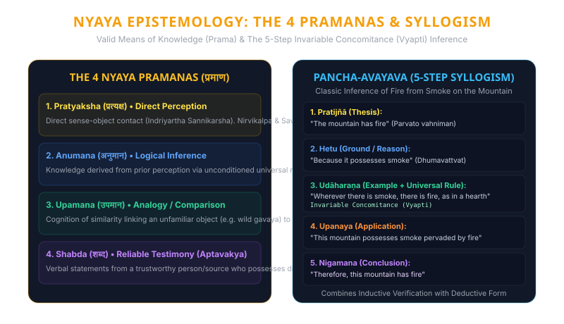
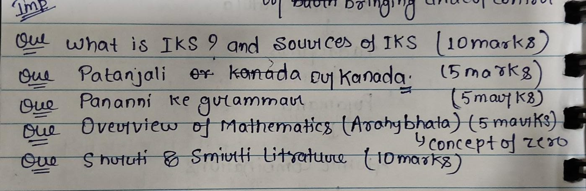
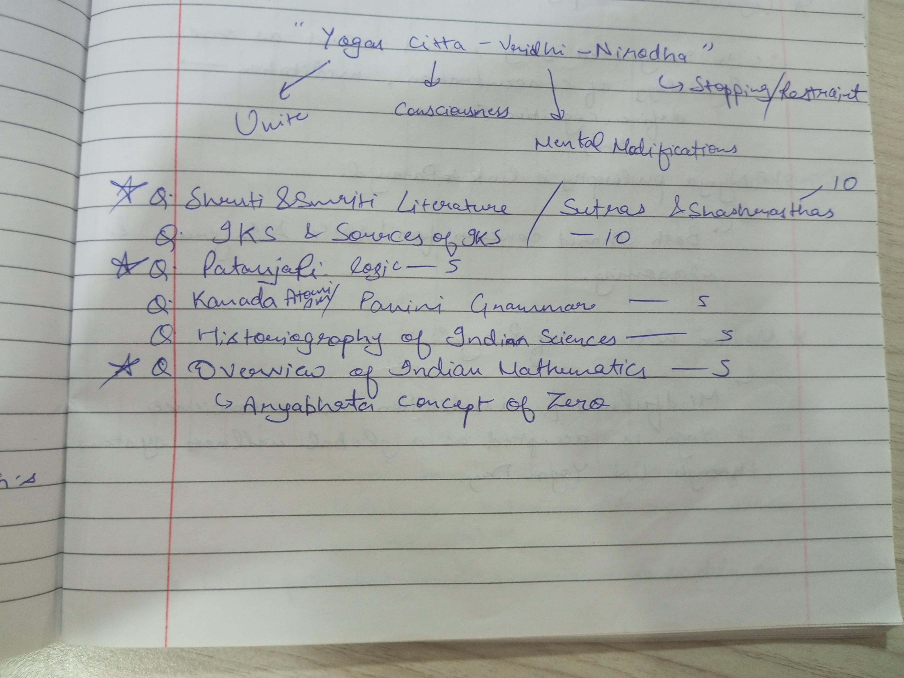

Scientific foundations and technological heritage of ancient India: Sulba Sutra sacred geometry, Pingala's binary metrics and combinatorial Meru Prastara, Aryabhata's axial earth rotation and trigonometry, Acharya Kanada's atomic theory, Panini's formal generative metalanguage, Wootz crucible metallurgy, and Nyaya epistemological proofs.
Vedas, Sutras & Shastras
Vedic Mental Arithmetic
1500 BCE — 16th C CE
Classroom & Exam Blueprint
Interactive scientific progression from the Vedic period through the Kerala School of Astronomy and Mathematics.
The oldest extant philosophical and scientific literature in Indo-European history. Composed in an oral mnemonic system with zero phonetic corruption across millennia. Embedded early astronomy (nakshatras), decimal counting in powers of ten up to $10^{12}$ (*Parardha*), and the moral-cosmic regulatory principle of *Rta*.

Experience algorithmic mental computation formulated from the 16 Vedic Sutras: vertical-crosswise multiplication and base deficiency arithmetic.
Full-fidelity inspection of classroom lecture sheets archived in Assets/ with optical transcriptions, topic allocations, and university exam weightages.


"Yogas Citta - Vritti - Nirodha" (Unite → Consciousness → Mental Modifications → Stopping / Restraint)
Optical Transcription of Questions:10 Master Examination Solutions systematically answering every query recorded in classroom drill sheets and Assets/Marwale of science and wonder.pdf.
IKS refers to the vast, cumulative, indigenous corpus of knowledge, methodologies, and technological frameworks developed and transmitted in the Indian subcontinent across more than five millennia. Rather than treating intellectual inquiry as fractured specializations, IKS operates on a holistic triad:
It encompasses diverse disciplines including mathematics, astronomy, metallurgy, civil engineering, Ayurveda, linguistics, governance (Arthashastra), environmental ecology, and classical arts.
The corpus is fundamentally structured into two authoritative strata:
Knowledge was structured to fulfill the four legitimate human aims (*Purusharthas*):
The entire library of Indian classical literature is divided based on epistemic authority and authorship:
Every single Veda is partitioned internally into four sequential layers representing the transition from outward ritual to inward metaphysical realization:
Acharya Kanada (original name Kashyapa) founded the Vaisheshika school of Indian philosophy, authoring the seminal Vaiśeṣika Sūtras. The system derives its name from *Visesha* (particularity/individuality) and provides the earliest systematic physical treatise on atomic theory in human civilization.
Kanada argued that matter cannot be divided infinitely; infinite divisibility leads to the logical fallacy of Anavasthā (regressus in infinitum) where a mustard seed and Mount Meru would contain equal infinite points. Therefore, division terminates at an ultimate indivisible particle:
Kanada grouped all physical entities into five elemental substances (*Dravyas*):
While the Greek philosopher Democritus (~400 BCE) viewed atoms as purely uniform, inert particles differing only in geometric shape and colliding mechanistically in an empty void, Kanada's theory maintained that:
Composed in the 2nd Century BCE by the polymath sage Patanjali (who also authored the *Mahabhashya* commentary on Panini's grammar), the Yoga Sūtras comprises 195 terse aphorisms partitioned into four distinct chapters (*Padas*):
Core Insight: Patanjali defines Yoga not as physical contortion or somatic gymnastics, but as rigorous cognitive mastery and stabilization of attention.
Patanjali adopts the Nyaya-Samkhya epistemological matrix, recognizing three valid means of knowledge: Pratyaksha (direct perception), Anumana (inference), and Agama/Shabda (reliable testimony). In contemporary neuroscience, *Citta-Vritti-Nirodha* maps directly onto the down-regulation of the Default Mode Network (DMN) in the brain, enhanced prefrontal cortex executive control, and vagus nerve stimulation.
Panini lived in Gandhara (ancient Shalatura near modern Attock). His magnum opus, the Aṣṭādhyāyī ("Eight Chapters"), is an algorithmic, generative, and context-sensitive formal grammar of the Sanskrit language comprising 3,959 algebraic sutras. It does not merely describe language; it generates every valid utterance from morphological root primitives.
Panini introduced "dummy symbols" or markers (*It*) attached to suffixes and roots that never appear in the final output string. These markers function identically to control flags or compiler metadata:
In 1965, the computer pioneer Frits Staal demonstrated that Panini's grammatical metalanguage is mathematically isomorphic to Backus-Naur Form (BNF), developed by John Backus and Peter Naur for specifying ALGOL 60. Rick Briggs (NASA scientist) published a famous 1985 paper in AI Magazine showing that Sanskrit's rigid Paninian rule engine is ideally suited for natural language processing (NLP) and knowledge representation in artificial intelligence systems.
Ancient India's greatest contribution to human civilization is the decimal place-value system with an operative zero. Found inscribed on the Bakshali Manuscript (~3rd–4th Century CE) and the Gwalior Chaturbhuj Temple inscription (876 CE), the zero evolved through three evolutionary phases:
Composed when Aryabhata was only 23 years old in Kusumapura (Pataliputra), the Āryabhaṭīya consists of 121 verses partitioned into four sections:
Indian numerals and mathematical treatises traveled through the Islamic Golden Age via scholars like Al-Khwarizmi (author of Kitāb al-Jamʿ wa-l-tafrīq bi-ḥisāb al-Hind, ~825 CE) and Al-Biruni (11th C), entering Europe through Leonardo Fibonacci's Liber Abaci (1202 CE) as the "Hindu-Arabic" numeral system.
Historiography is the critical study of the methodology, perspectives, sources, and interpretative frameworks through which historical narratives are written and reconstructed over time. Applied to Indian science, it analyzes how ancient Indian achievements in metallurgy, surgery, mathematics, and astronomy were recorded, translated, minimized, or rediscovered.
During British colonial rule, indigenous sciences were systematically marginalized:
Today, this heritage is recovered through evidence-based bodies: Ministry of AYUSH, Council of Scientific & Industrial Research (CSIR), the Indian Knowledge Systems (IKS) Division under the Ministry of Education, and the Traditional Knowledge Digital Library (TKDL), which preempts global biopiracy on Ayurvedic botanical formulations.
Working at the astronomical observatory of Ujjain, Brahmagupta wrote the Brāhmasphuṭasiddhānta ("Correctly Established Doctrine of Brahma") in 628 CE. His principal breakthroughs include:
Bhaskara II headed the astronomical observatory at Ujjain. His masterwork, the Siddhānta Śiromaṇi (1150 CE), contains four legendary treatises: Līlāvatī (arithmetic), Bījagaṇita (algebra), Grahagaṇita (planetary mathematics), and Golādhyāya (spherical geometry).
Bhaskara perfected the Chakravāla (cyclic) algorithm for finding integer solutions to indeterminate quadratic equations of the form:
Centuries later, Pierre de Fermat posed this problem to European mathematicians (mistakenly attributed by Euler to John Pell). In 1768, Joseph-Louis Lagrange published a complicated continuous fraction solution. However, Hermann Hankel, the noted 19th-century German historian of mathematics, stated:
"It is above all praise; it is the finest thing achieved in the theory of numbers before Lagrange."
For the notoriously difficult case $x^2 - 61y^2 = 1$, Bhaskara found the smallest integer solution in just a few cyclic steps:
x = 1,766,319,049 \quad \text{and} \quad y = 226,153,980
Bhaskara II investigated instantaneous planetary motion, defining *Tātkālikī Gati* (instantaneous velocity). He proved that when a variable reaches its maximum value, its differential vanishes, anticipating Fermat's theorem: $d(\sin \theta) = \cos \theta \, d\theta$.
The Sūrya Siddhānta is the foundational treatise of classical Indian mathematical astronomy, historically updated by Latadeva (disciple of Aryabhata I). It presents rigorous spherical trigonometry formulas, solar-lunar eclipse tracking algorithms, and remarkably precise cosmic constants:
The traditional Hindu lunisolar calendar calculates time using five exact celestial coordinates:
Ancient Indian timekeeping bridged microscopic instants with macrocosmic cycles (*Kāla Cakra*):
Originating in southern India (Tamil: *Ukku*, Kannada: *Uku*), Wootz steel was an ultra-high-carbon crucible steel (1.0–1.6% Carbon) exported across the ancient world to forge legendary Damascus swords. Wrought iron was sealed inside high-temperature refractory clay crucibles alongside carbon-rich biomass (leaves of *Cassia auriculata*) and heated to $1,400^\circ\text{C}$. In 2006, electron microscopy at the University of Dresden revealed that Wootz steel contained carbon nanotubes and cementite nanowires, explaining its unprecedented tensile strength, razor sharpness, and characteristic flowing water-wave surface pattern (*Jauhar*).
Dating back to 2600 BCE, Harappan cities like Mohenjo-Daro, Harappa, and Dholavira exhibited the world's most advanced subterranean hydraulic sanitary grids:
Engineered throughout Gujarat and Rajasthan (e.g., Rani ki Vav, Chand Baori), stepwells represent sophisticated subterranean hydraulic architecture. They tapped high water tables during monsoons, maintained natural evaporative micro-cooling during scorching summers, and incorporated subterranean pavilion galleries that doubled as community social sanctums.
Ancient civil architecture relied on modular geometric fractal grids:
High-yield comparative reference tables designed for rapid university exam revision and conceptual recall.
Comparative analysis of cosmological mechanics, earth rotation, and eclipse theories.
| Dimension | Indian Siddhantic Astronomy (Aryabhata, 499 CE) | Western Classical Astronomy (Ptolemy, ~150 CE) |
|---|---|---|
| Diurnal Motion of Earth | Earth rotates daily on its axis from West to East (*Bhramana*); apparent planetary motion is relative. | Earth is completely static, immovable, and anchored at the absolute center of the universe. |
| Cause of Day & Night | Axial rotation of the spherical terrestrial globe (*Bhu-gola*). | The entire celestial sphere and starry vault rotate around the stationary Earth once every 24 hours. |
| Eclipse Mechanism | Pure optical shadow phenomenon: Lunar eclipse = Earth's shadow (*Bha-chāyā*) on Moon; Solar eclipse = Moon blocking Sun. | Early Mediterranean folklore attributed eclipses to mythological omens or complex crystalline epicycles. |
| Value of $\pi$ | Calculated $\pi \approx 3.1416$ ($62832 / 20000$); designated explicitly as *Asanna* (approximative). | Ptolemy used $377/120 \approx 3.14166$, derived from Archimedean polygon perimeters. |
| Cosmological Time Scales | Cyclic Mahayugas ($4.32 \times 10^6$ years) and Kalpas ($4.32 \times 10^9$ years). | Linear, short-timeline biblical cosmology spanning only a few thousand years. |
Core distinctions between the two foundational pillars of classical Ayurveda (*Brihat Trayi*).
| Feature | Caraka Saṁhitā (Kayachikitsa / Internal Medicine) | Suśruta Saṁhitā (Shalyatantra / Surgical Science) |
|---|---|---|
| Founding Master | Acharya Charaka (based on Agnivesha's earlier treatise). | Acharya Sushruta (Father of Surgery, practicing in Varanasi). |
| Primary Specialization | Kāyacikitsā: Systemic pathology, etiology, pharmacology, digestive fire (*Agni*), and metabolic homeostasis. | Śalyatantra: Operative surgical techniques, wound excision, anatomical dissection, and plastic reconstruction. |
| Pathological Triad | Detailed Tridosha homeostasis (*Vāta*, *Pitta*, *Kapha*) and 7 bodily tissues (*Dhatus*). | Emphasizes *Rakta* (blood) as the fourth vital humor alongside Vata, Pitta, and Kapha. |
| Instrumentation | Pharmaceutical formulation apparatus, decoction vessels, steam fermentation baths. | Over 101 blunt instruments (*Yantras*) and 20 sharp steel instruments (*Shastras*) modeled on animal/bird jaws. |
| Pioneering Surgeries | Preventive lifestyle regimens: *Dinacharya* (daily routine) and *Ritucharya* (seasonal adaptation). | Earliest recorded Rhinoplasty (forehead flap reconstruction), cataract couching, lithotomy (bladder stone removal), and cesarean delivery. |
Pre-Pythagorean geometric theorems, square-circle transformations, and $\sqrt{2}$ approximations.
| Mathematical Concept | Baudhayana Sulba Sutra (~800 BCE) | Greek Pythagorean School (~500 BCE) |
|---|---|---|
| Diagonal Theorem Statement | "Dīrghasyākṣaṇayā rajjuḥ...": The diagonal rope of a rectangle produces an area equal to both the flank and horizontal sides. | The square on the hypotenuse of a right-angled triangle equals the sum of the squares on the other two sides. |
| Chronological Precedence | Documented ~800 BCE in context of Vedic sacrificial fire altars (*Yagyavedis*). | Formulated ~530–500 BCE by Pythagoras of Samos (~300 years later). |
| Approximation of $\sqrt{2}$ | $\sqrt{2} \approx 1 + \frac{1}{3} + \frac{1}{3 \times 4} - \frac{1}{3 \times 4 \times 34} = \frac{577}{408} \approx 1.4142156$ (Accurate to 5 decimals). | Hippasus discovered that $\sqrt{2}$ is irrational, reportedly leading to philosophical scandal and crisis in the Pythagorean brotherhood. |
| Practical Application | Geometric altar transformations (Squaring the Circle, doubling area without changing shapes). | Abstract, mystical number worship and pure deductive planar geometry. |
Reconstructed from Atharvavedic appendices by Swami Bharati Krishna Tirtha (1884–1960).
| # | Vedic Sutra (Sanskrit) | English Meaning | Primary Computational Domain |
|---|---|---|---|
| 1 | Ekādhikena Pūrveṇa | By one more than the previous one | Squaring numbers ending in 5 ($45^2 = (4 \times 5) \ | \ 25 = 2025$), recurring decimals. |
| 2 | Nikhilaṁ Navataścaramaṁ Daśataḥ | All from 9 and the last from 10 | Multiplication of numbers near base powers of 10 ($98 \times 96$), division by 9/99. |
| 3 | Ūrdhva-Tiryagbhyām | Vertically and crosswise | General multiplication of any $N$-digit numbers, matrix determinants, division. |
| 4 | Parāvartya Yojayet | Transpose and apply | Synthetic algebraic division, solving simultaneous linear equations. |
| 5 | Śūnyaṁ Sāmyasamuccaye | When the collection is equal, it is zero | Solving algebraic equations by inspection (e.g., $(x+1)+(x+2) = (x+3)$). |
| 6 | Ānurūpye Śūnyamanyat | If one is in ratio, the other is zero | Solving simultaneous linear equations with proportional coefficients. |
| 7 | Saṅkalana-Vyavakalana-bhyām | By addition and by subtraction | Elimination in symmetric simultaneous equations ($ax+by=c$ and $bx+ay=d$). |
| 8 | Pūraṇāpūraṇābhyām | By completion or non-completion | Solving cubic equations, completing squares in quadratic equations. |
| 9 | Calana-Kalanābhyām | By differential calculus motion | Factorization of quadratic polynomials, finding roots via derivative steps. |
| 10 | Yāvadūnam | By the deficiency | Squaring and cubing numbers close to powers of 10 ($103^2 = 106 \ | \ 09 = 10609$). |
Global residential centers of higher learning that attracted scholars across Asia.
| University | Location & Epoch | Academic Specialization | Notable Scholars & Architecture |
|---|---|---|---|
| Takṣaśilā (Taxila) | Gandhara (Rawalpindi) • ~6th C BCE – 5th C CE | Medicine (Ayurveda), military science (Dhanurveda), statecraft, Paninian linguistics, astronomy. | Panini, Kautilya (Chanakya), Charaka, King Prasenajit, Jivaka (physician to Lord Buddha). |
| Nālandā | Magadha (Bihar) • 5th C – 12th C CE | Mahayana & Hinayana logic, epistemology, mathematics, metallurgy, international scholars. | Aryabhata, Nagarjuna, Dharmapala, Xuanzang; 9-story library (*Dharmaganja*) containing millions of texts. |
| Valabhī | Saurashtra (Gujarat) • 6th C – 12th C CE | Administrative statecraft, business jurisprudence, Hinayana philosophy, maritime commerce economics. | Gunamati, Sthiramati; recognized rival to Nalanda, noted by Chinese traveler Yijing. |
| Vikramaśīlā | Bhagalpur (Bihar) • 8th C – 12th C CE | Advanced Buddhist logic, Tantric chemistry, metallurgy, grammar, metaphysics. | Founded by King Dharmapala; headed by Atisha Dipankara (who transmitted Buddhist sciences to Tibet). |